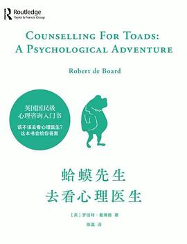

《蛤蟆先生去看心理医生》

8.5
★★★★☆
豆瓣评分 · 130,000 人评价
风靡全球的心理咨询普及经典童话。作者借英国文学名著《柳林风声》的人物，生动展现抑郁严重的蛤蟆先生在苍鹭咨询师引导下，通过沟通分析学（TA）走出心理阴霾的治愈过程。
总体观点
心理咨询不是给病人开药方的指导者，而是一场来访者在安全镜子前重新审视自我、接纳情绪并承担生命责任的协作探索。
每个人的内心中都交替存在三种自我状态：儿童自我状态（顺从或任性）、父母自我状态（挑剔或说教）与成人自我状态（理性审视当下现实）。
成长的本质是从受害者心态走出来。停止用童年时期形成的心理游戏操控他人或惩罚自己，唯有勇敢进入“成人状态”，才能拥有掌控自己人生的自由。
核心观点
-
1. 谁是真正的委托人：心理咨询必须由本人自主决定
别人押解你来咨询毫无意义，只有自己真心渴望改变，心理治疗才真正开始。
河鼠与鼹鼠押送痛苦的蛤蟆去见苍鹭，苍鹭严肃声明：“我只对愿意为自己负责的蛤蟆工作，而不是对他的朋友们负责。” -
2. 儿童自我状态：隐藏在顺从与讨好背后的愤怒压抑
童年期为了在强势父母面前生存而形成的防御机制，在成人期依然潜意识操控着情绪反应。
蛤蟆在严苛的长辈面前总表现得唯唯诺诺、插科打诨，其实是在用婴儿般的讨好策略避免遭受惩罚。 -
3. 父母自我状态：挑剔型的内在法官在无休止审判自己
我们将父母当年的指责内化成了心中的审判官，哪怕父母不在场，也时刻苛责自己“不够好”。
獾先生严厉训斥蛤蟆无能，蛤蟆痛苦地发现自己内心深处的声音竟然和獾一模一样，天天在痛骂自己窝囊。 -
4. 成人自我状态：调动理性，客观思考此时此地的现实
成人状态既不陷入幼年情绪深渊，也不被旧有戒律教条绑架，而是如实评估现状并采取行动。
蛤蟆不再大哭或逃避，而是平静地拿出一张纸，理性梳理蛤蟆庄园目前的财务现状并制定清偿计划。 -
5. 人生坐标四象限：“我好，你也好”是唯一的成熟心智
摆脱“我不好，你好”（自卑受害）与“我好，你不好”（自恋挑剔），走向彼此接纳与信赖。
走出抑郁后的蛤蟆在咖啡馆偶遇老朋友，不再觉得别人在鄙视自己，真诚赞美对方同时也安然接纳自己的不完美。 -
6. 为自己的情绪负全责：没有人能让你不快乐，除非你自己许可
别人可能做出冒犯举动，但感到愤怒或委屈是你自己潜意识选择做出的反应模式。
蛤蟆最终领悟到不是獾逼迫他抑郁的，是他自己选择了用抑郁和自我惩罚来向世界索取同情。
全书结构
-
第1-4章 陷入绝境与初见咨询师
蛤蟆遭遇精神崩溃，朋友们将其送往苍鹭处；苍鹭确立咨询契约，让蛤蟆为自己的痛苦评分并唤醒自我意识。
苍鹭给蛤蟆展示情绪温度计（1-10分），蛤蟆痛苦地将自己打在1-2分，第一次被迫正视自己低迷的心境。 -
第5-8章 探索童年与愤怒的秘密协议
拆解“儿童自我状态”，揭示童年被严父压制的成长创伤，以及用顺从、叛逆、拖延逃避冲突的心理机制。
蛤蟆回忆起童年时父亲严厉的凝视，终于明白自己为什么总是在权威人物面前感到浑身颤抖和畏缩。 -
第9-12章 父母自我状态与人生心理坐标
解析内在挑剔型父母与人生四种基本坐标（我好/不好，你好/不好），蛤蟆识别出自己的“受害者游戏”。
苍鹭用图表向蛤蟆展示心理游戏“可怜弱小的我”，蛤蟆震惊地发现自己多年来一直在导演这场悲剧。 -
第13-16章 成人状态的觉醒与新生
蛤蟆学习调动理性进入“成人自我状态”，制定重启人生的具体计划，自信告别苍鹭，奔赴新的生活。
在告别聚会上，容光焕发的蛤蟆向朋友们宣布自己将投身板球俱乐部管理与新工作，开启全新人生篇章。